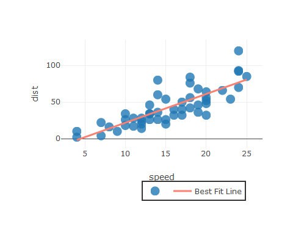

# install.packages("devtools") # devtools::install_github("kmaheshKulkarni/corrly")
The package tests the use of htmlwidgets in pkgdown:
library(plotly) library(corrly) spearman<- corr_coef_spearman(variable1= cars$speed, variable2=cars$dist, decimal = 2) corr_scatterly(data=cars,x=cars$speed,y=cars$dist,corr_coef=spearman,xname="speed",yname="dist")

library(plotly) library(corrly) matrixly(data = mtcars)